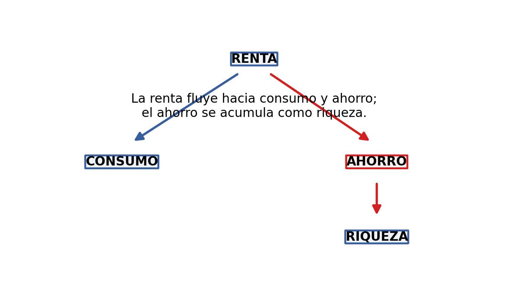
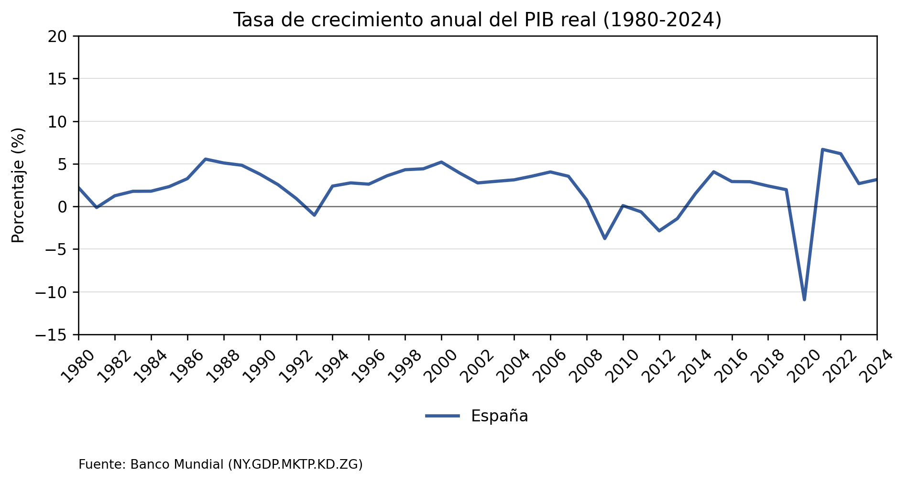
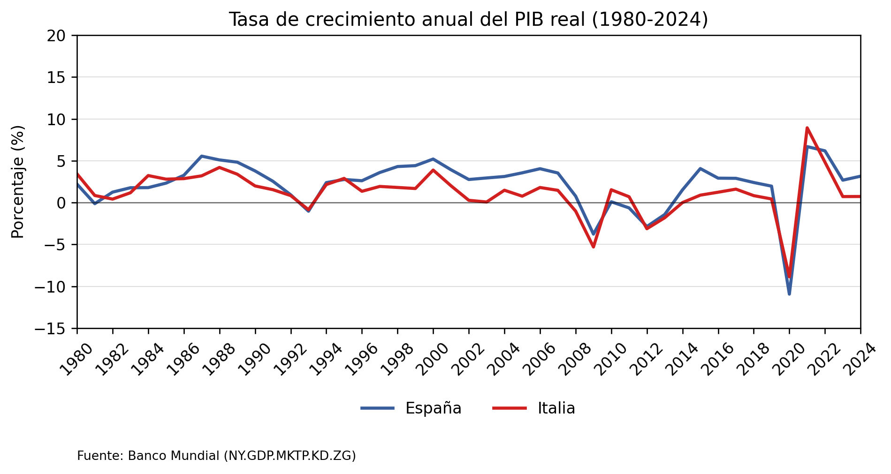
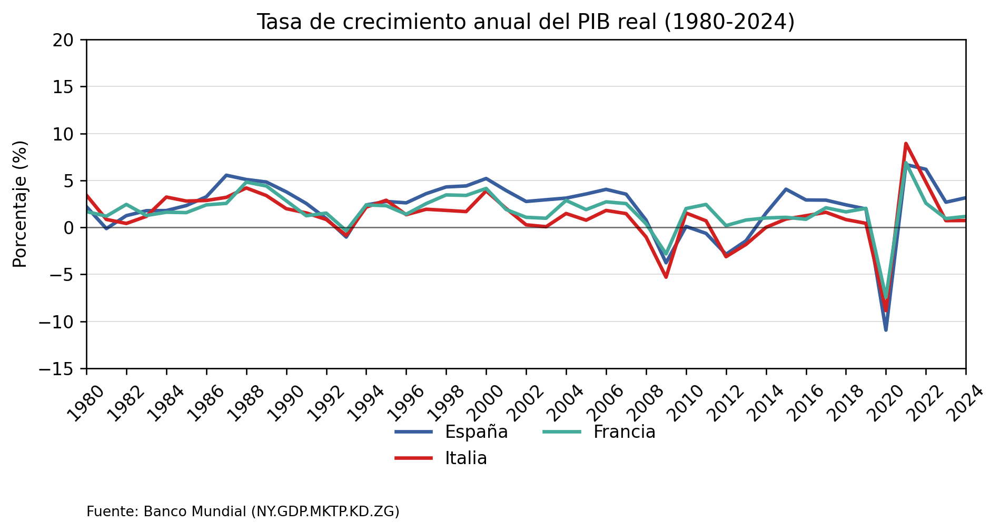
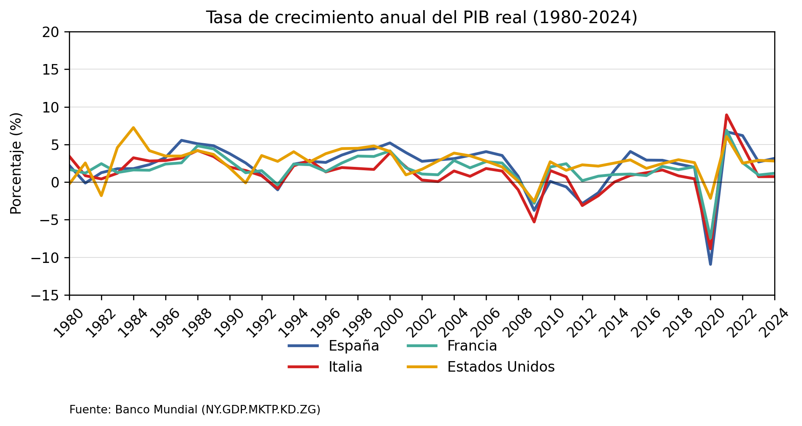
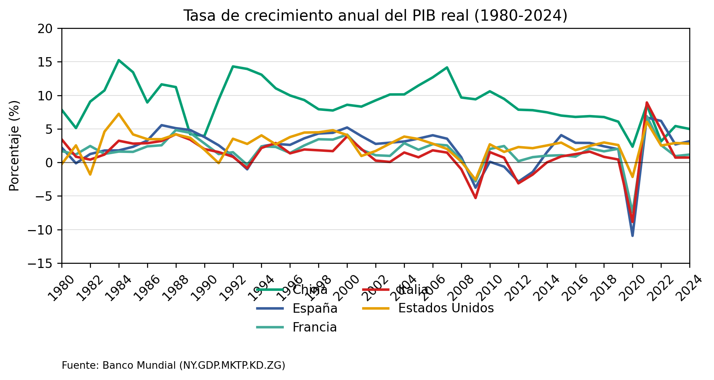
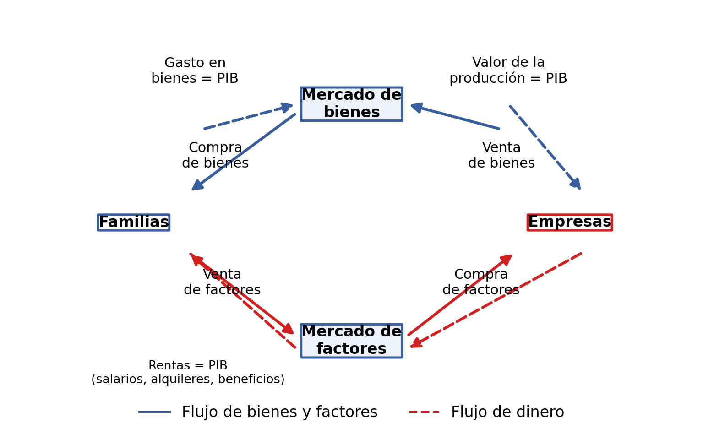
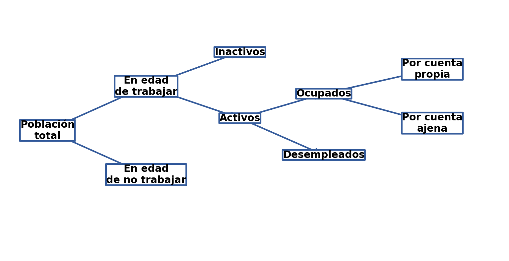
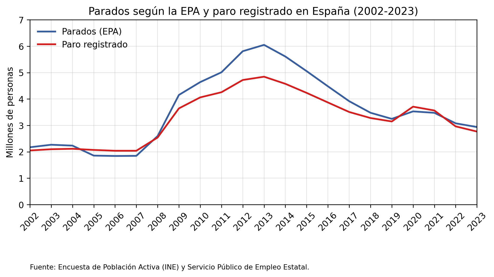

6 Variables y conceptos macroeconómicos (I): producción y empleo
6.1 Producción
6.1.1 El producto interior bruto (PIB)
El Producto Interior Bruto (PIB) es el valor de mercado de todos los bienes y servicios finales producidos en un territorio durante un periodo determinado.
Como hay muchos bienes que pueden ser intermedios o finales, en la práctica se mide como la suma total de valor añadido (VA):
\[ VA = \text{Valor total de la producción} - \text{Valor de los bienes intermedios} \]
El PIB es una variable que se mide durante un periodo de tiempo determinado (año, trimestre…). Ese tipo de variable se llama…
6.1.2 Recordemos: variables flujo y variables fondo
Variables flujo: se miden en un periodo de tiempo.
- El PIB mide el valor de los bienes y servicios producidos durante un periodo (año, trimestre…).
- La renta o ingreso de una persona durante un mes.
Variables fondo (stock): se miden en un instante en el tiempo.
- La deuda pública mide el total de deuda en un momento determinado (por ejemplo, al final del año fiscal).
- El capital físico de una empresa (maquinaria, edificios…).
El PIB es un indicador de la actividad económica de un territorio. Sirve para hacer comparaciones entre diferentes territorios en un mismo periodo de tiempo y entre diferentes periodos de tiempo en un mismo territorio; en este segundo caso hablamos de crecimiento económico.
El valor de mercado de los bienes y servicios puede variar por:
- Variación en las cantidades producidas.
- Variación en los precios.
Para saber si ha crecido la producción, es necesario eliminar el efecto de la variación en los precios.
6.1.3 PIB nominal y PIB real
PIB nominal (o a precios corrientes): suma de todos los bienes y servicios finales multiplicados por su precio corriente.
Precio corriente = precio vigente en el periodo de producción.
PIB real (o a precios constantes): suma de todos los bienes y servicios finales multiplicados por un precio constante (en base a un año de referencia).
Precio constante = precio vigente en un periodo de referencia o “base”, que se usa para calcular el valor de mercado en todos los periodos.
Si queremos medir la evolución de la producción a lo largo del tiempo, debemos usar el PIB real.
6.1.3.1 Ejemplo: cantidades, precios, PIB nominal y PIB real
| Bien final | Año 0: cantidad | Año 0: precio | Año 1: cantidad | Año 1: precio | Año 2: cantidad | Año 2: precio |
|---|---|---|---|---|---|---|
| Automóviles | 500 unid. | 20.000 € | 500 unid. | 40.000 € | 625 unid. | 44.000 € |
| Alimentos | 20.000 Tn. | 100 € | 20.000 Tn. | 200 € | 18.000 Tn. | 150 € |
| Maquinaria | 1.000 unid. | 2.500 € | 1.000 unid. | 5.000 € | 1.200 unid. | 7.500 € |
| Servicios | 40.000 horas | 50 € | 40.000 horas | 100 € | 50.000 horas | 110 € |
PIB nominal año 0: (500 x 20.000) + (20.000 x 100) + (1.000 x 2.500) + (40.000 x 50) = 16.500.000 €.
PIB nominal año 1: (500 x 40.000) + (20.000 x 200) + (1.000 x 5.000) + (40.000 x 100) = 33.000.000 €.
PIB nominal año 2: (625 x 44.000) + (18.000 x 150) + (1.200 x 7.500) + (50.000 x 110) = 44.700.000 €.
PIB real año 0 (base: año 0): (500 x 20.000) + (20.000 x 100) + (1.000 x 2.500) + (40.000 x 50) = 16.500.000 €.
PIB real año 1 (base: año 0): (500 x 20.000) + (20.000 x 100) + (1.000 x 2.500) + (40.000 x 50) = 16.500.000 €.
PIB real año 2 (base: año 0): (625 x 20.000) + (18.000 x 100) + (1.200 x 2.500) + (50.000 x 50) = 19.800.000 €.
La tasa de crecimiento del PIB real se calcula como:
\[ \text{Tasa de crecimiento del PIB (año }t\text{)} = \frac{\text{PIB real}_t - \text{PIB real}_{t-1}}{\text{PIB real}_{t-1}} \cdot 100 \]





Fuente: Banco Mundial (NY.GDP.MKTP.KD.ZG).
Las diferencias entre PIB nominal y real se deben a las variaciones de los precios. Es posible utilizar el cociente entre ambas magnitudes como una medida del nivel general de precios:
\[ \text{Deflactor del PIB}_t = \frac{\text{PIB nominal}_t}{\text{PIB real}_t}\cdot 100 \]
6.1.4 Tres enfoques para medir el PIB
Enfoque de la producción: el PIB puede medirse como la suma total del valor agregado en la producción. Es el enfoque que hemos visto hasta ahora.
Enfoque del gasto: el PIB puede medirse como el gasto total (agregado) que se realiza en un país.
Enfoque de las rentas (o de los ingresos): el PIB puede medir la suma total de los salarios, beneficios, alquileres, intereses…
6.1.5 El flujo circular de la renta

No se incluye el Estado ni la relación del país con el exterior y solo hay bienes de consumo.
6.1.6 Componentes del PIB según el enfoque
Según el enfoque de la producción, el PIB se calcula como la suma de los sectores productivos: agricultura, pesca, industrias extractivas, servicios…
Según el enfoque de las rentas o ingresos, el PIB recoge remuneraciones de los trabajadores, de las empresas (beneficios)…
Según el enfoque del gasto, el PIB recoge el gasto de las familias (consumo), las empresas (inversión), el Estado (gasto público) y el sector exterior (exportaciones netas).
\[ PIB = \text{Consumo privado }(C) + \text{Inversión privada }(I) + \text{Compras del Estado }(G) + \text{Exportaciones netas }(XN) \]
\[ PIB = \text{Consumo privado} + \text{Consumo público} + \text{Formación bruta de capital} + \text{Exportaciones netas} \]
Si consideramos conjuntamente inversión privada y la inversión pública, lo llamaremos formación bruta de capital.
6.1.7 Qué no mide el PIB
¿El PIB mide toda la actividad económica? No.
Quedan fuera, por ejemplo:
- Autoconsumo, trabajo doméstico, trabajo voluntario…
- Economía sumergida.
¿El PIB es un indicador de bienestar? No, aunque hay cierta relación.
Indicadores propuestos:
- Índice de bienestar económico sostenible (IBES).
- Índice de progreso real/genuino (IPR/IPG).
- Índice de desarrollo humano (IDH), etc.
El PIBpc se incluye en el cálculo del IDH:
\[ \text{PIB per cápita} = \frac{\text{PIB}}{\text{número de habitantes}} \]
Referencia destacada: Diane Coyle, El producto interno bruto: una historia breve pero entrañable (Fondo de Cultura Económica).
Nota de pronunciación: /dáian coil/.
6.1.8 Otros indicadores de producción y renta
6.1.8.1 Producto interior neto
Producto Interior Neto (PIN): es una medida que ajusta el PIB teniendo en cuenta la depreciación de los activos para proporcionar un dato más preciso del crecimiento económico de un país.
\[ PIN = PIB - \text{Depreciación} \]
De toda la inversión, hay parte dedicada a reponer capital desgastado (reposición = depreciación). El resto es la inversión neta:
\[ \text{Inversión neta} = \text{Inversión bruta} - \text{Reposición} \]
\[ \text{Inversión neta} = \text{Inversión bruta} - \text{Depreciación} \]
6.1.8.2 Producto nacional bruto y producto nacional neto
Producto Nacional Bruto (PNB): suma de ingresos o rentas totales que se generan a favor de los residentes de un país, se generen donde se generen.
\[ PNB = PIB - RFEN + RFNE \]
Donde RFEN son las rentas de los factores extranjeros en territorio nacional y RFNE son las rentas de los factores nacionales en territorio extranjero.
Práctica 1. Una empresa estadounidense tiene una planta de producción en México. El valor de los bienes producidos por esta planta se incluirá en el PIB de México. Los ingresos que los propietarios estadounidenses obtienen de esta planta se incluirán en el PNB de Estados Unidos.
Una empresa mexicana posee inversiones en otros países. Los ingresos que los inversionistas mexicanos reciben del extranjero se sumarán al PNB de México.
Producto Nacional Neto (PNN): diferencia entre PNB y la depreciación (pérdida de valor) o reposición:
\[ PNN = PNB - \text{Depreciación} = PNB - \text{Reposición} \]
6.1.8.3 Renta nacional
Renta Nacional (RN): mide la suma total de todas las rentas generadas a favor de los poseedores de los factores productivos como contraprestación por su aportación al proceso productivo.
\[ RN = PNN - \text{impuestos indirectos} + \text{subvenciones} \]
Las subvenciones son pagos que perciben las empresas del Estado.
6.1.8.4 Renta personal y renta personal disponible
Renta Personal (RP): suma de las rentas que reciben las personas:
\[ RP = RN - BND - TSB - TSS + TNE + IDP \]
Renta Personal Disponible (RPD): es la renta personal menos los impuestos directos sobre las personas (TDP). Se puede usar para consumo o ahorro privados.
\[ RPD = RP - TDP \]
\[ RPD = \text{consumo privado} + \text{ahorro privado} \]
BND: Bº no distribuido. TSB: impuestos sobre beneficios. TSS: impuestos Seguridad Social. TNE: transferencias netas del Estado. IDP: intereses de deuda pública. TDP: impuestos directos sobre las personas.
Nota de la diapositiva: si TNE son las transferencias netas del Estado, entonces eso ya restaría los impuestos directos, ¿no? Entonces, ¿por qué se restan de nuevo para calcular la renta personal disponible? En todo caso, las transferencias en la renta personal deberían ser brutas, sin restar los impuestos.
6.2 Empleo
6.2.1 Principales magnitudes
La situación en relación con la actividad económica se basa en criterios OIT.

Nota: en España, la edad legal para poder trabajar es de 16 años.
Tasa de actividad: cociente entre la población activa y la población en edad de trabajar.
\[ \text{Tasa de actividad} = \frac{\text{Población activa}}{\text{Población en edad de trabajar}} \times 100 \]
Tasa de desempleo: cociente entre los desempleados y los activos, esto es, la proporción de activos que buscan pero no encuentran un puesto de trabajo.
\[ \text{Tasa de desempleo} = \frac{\text{Desempleados}}{\text{Población activa}} \times 100 = \frac{\text{Desempleados}}{\text{Ocupados} + \text{Desempleados}} \times 100 \]
6.2.2 Cómo se miden los desempleados
Desempleo medido con una encuesta (en España, la Encuesta de Población Activa, EPA): se computa como desempleados a quienes:
- No hayan tenido un empleo por cuenta ajena ni por cuenta propia durante la semana de referencia.
- Estén disponibles para trabajar.
- Hayan tomado medidas concretas para buscar un trabajo por cuenta ajena o hayan hecho gestiones para establecerse por su cuenta durante el mes precedente.
Desempleo registrado: total de demandas de empleo en alta (en España, en el Servicio Público de Empleo Estatal, SEPE), existentes el último día de cada mes, excluyendo ciertas situaciones.
La metodología estadística es diferente:
- La EPA es una encuesta telefónica (realizada por el INE).
- El desempleo registrado del SEPE es un registro administrativo.
Referencia incluida en las notas de la diapositiva: https://www.ine.es/prensa/epa_prensa.htm
6.2.2.1 Paro estimado (EPA): cómo se mide
Definición operativa: cómo interpretar la búsqueda activa de trabajo.
- Oficina pública de empleo.
- Oficina privada.
- Enviar candidaturas.
- Sindicatos, contactos personales.
- Responder anuncios.
- Pruebas, concursos.
- Buscar local, material.
- Gestiones de permisos.
No basta sólo inscribirse.
6.2.2.2 Paro registrado (SEPE): cómo se mide
El paro registrado está constituido por el total de demandas de empleo registradas el último día de cada mes, excluyendo ciertas situaciones:
- Pluriempleo.
- Buscan mejor empleo.
- Colaboradores sociales que perciben prestación por desempleo.
- Jubilados.
- Quienes buscan empleo coyuntural (3 meses).
- Quienes buscan empleos de menos de 20 horas a la semana.
- Estudiantes.
- Trabajadores agrícolas subsidiados.
- Quienes rechazan ofertas.
- Demandantes sin disponibilidad inmediata.
6.2.2.3 La diferencia entre EPA y paro registrado
\[ \text{Tasa de paro EPA} = \frac{\text{paro declarado}}{\text{población activa}} \]
\[ \text{Tasa de paro SEPE} = \frac{\text{paro registrado}}{\text{población activa}} \]

Fuente: Encuesta de Población Activa (INE) y Servicio Público de Empleo Estatal.
6.2.3 Los efectos del desempleo
Costes económicos:
- La sociedad mantiene unos recursos sin utilizar.
- Frena el crecimiento económico.
Costes psicológicos y sociales:
- Efectos en la salud física y mental.
- Reduce el bienestar individual.
- Puede generar tensiones sociales.
- Desigualdad.